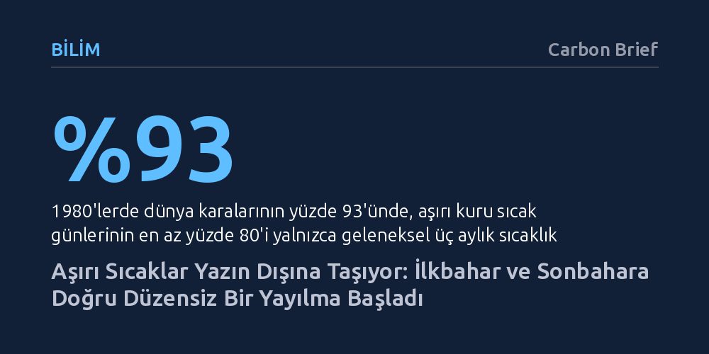

BILIM · Carbon Brief · 2026-09-11
Yeni bir iklim araştırması, aşırı sıcak dalgalarının küresel karaların yarısından fazlasında geleneksel yaz aylarının dışına çıkarak ilkbahar veya sonbahara taştığını ortaya koyuyor. Üstelik bu yayılma her bölgede farklı işliyor ve yalnızca küresel ısınmanın yıllık ortalamasıyla açıklanamıyor.
Aşırı sıcakların yalnızca yaz ortasına ait bir afet olmadığını; vücudun henüz sıcağa uyum sağlayamadığı ilkbaharda ve altyapının yıprandığı sonbaharda da ölümcül riskler doğurduğunu gösteriyor.

Aşırı sıcaklar iklim krizinin en ölümcül sonuçlarından biri olarak bilinse de genellikle yalnızca Temmuz ve Ağustos gibi geleneksel yaz zirveleriyle ilişkilendirilir. Oysa alışılmış takvimin dışına taşan aşırı sıcaklar çok daha sinsi ve yıkıcı sonuçlar doğurur. İlkbahar aylarında veya yazın hemen başında aniden bastıran bir sıcak dalgası, insan bedeninin henüz yüksek sıcaklıklara fizyolojik uyum sağlayamamış olması ve serinleme merkezleri ya da klima sistemleri gibi koruyucu altyapıların henüz devreye girmemesi nedeniyle ölümcül riskler yaratır. Buna karşılık, uzun ve bunaltıcı bir yazın ardından sonbaharda yaşanan aşırı sıcaklar ise zaten yıpranmış vücutları ve aşırı yük altında ezilmiş enerji ve su şebekelerini tamamen tüketir.
AGU Advances dergisinde yayımlanan öncü bir iklim araştırması, aşırı sıcakların yıl içindeki zamanlamasının küresel ölçekte nasıl değiştiğini ilk kez somut verilerle ortaya koydu. Araştırmanın temel bulgusu oldukça çarpıcı: Dünya genelindeki karasal alanların yarısından fazlasında tehlikeli sıcaklıklar geleneksel yaz aylarının dışına taşıyor. Ancak bu taşma her yerde simetrik bir biçimde gerçekleşmiyor; sıcak hava dalgaları coğrafyaya bağlı olarak ya ilkbahara ya da sonbahara doğru düzensiz bir şekilde sızıyor.
Meteorolojide yaz mevsimi, basite indirgenmiş bir kabulle Kuzey Yarımküre'de hazirandan ağustosa, Güney Yarımküre'de ise aralıktan şubata kadar uzanan üç aylık dönem olarak tanımlanır. Fakat aşırı sıcak rejimleri dünyanın her yerinde bu takvim sınırlarına uymaz. Bu nedenle araştırmacılar geleneksel takvim anlayışını bir kenara bırakarak 'yerel sıcaklık mevsimi' kavramını geliştirdi. Bu kavram, 1980'li yıllarda aşırı sıcak günlerin en yoğun yaşandığı ardışık üç ayı temel alıyor; bu üç aylık ana dönemin hemen öncesindeki ve sonrasındaki ikişer aylık dönemler ise geçiş mevsimleri olarak tanımlanıyor.
Çalışmada 1980 ile 2024 arasındaki 45 yıllık dönemi kapsayan MERRA-2 ve ERA5 yeniden analiz iklim veri setleri incelendi. Araştırmacılar 1980'lerin verilerini başlangıç çizgisi olarak kabul edip 2015-2024 yılları arasındaki son on yılla kıyaslayarak birikimli iklim değişikliğinin izini sürdü. Üstelik yalnızca kuru sıcaklık değil, yüksek nemin insan fizyolojisi üzerindeki hayati baskısını yansıtan yaş termometre küre sıcaklığı da ölçüldü. Böylece hem kurak sıcakların bitki örtüsü ve ekosistemler üzerindeki etkisi hem de nemli sıcakların insan sağlığı üzerindeki baskısı bağımsız olarak modellendi.
Elde edilen sonuçlar, 1980'lerde aşırı sıcakların yıl içinde oldukça net sınırlara hapsolduğunu gösteriyor. O dönemde dünya karalarının yüzde 93'ünde, aşırı kuru sıcak günlerinin en az yüzde 80'i yalnızca geleneksel sıcaklık mevsimi içinde gerçekleşiyordu. Hatta mevsimsel dalgalanmaların çok az görüldüğü tropik kuşakta dahi durum farksızdı. Günümüzde ise bu keskin sınırlar hızla bulanıklaşıyor; aşırı sıcaklar karaların yarıdan fazlasında geçiş mevsimlerine taşarken coğrafi açıdan belirgin bir kutuplaşma sergiliyor.
Batı Avrupa, Güney Afrika ve kuzeybatı Hindistan'da aşırı sıcak olayları geleneksel mevsimin öncesine, yani ilkbahar aylarına doğru yoğunlaşıyor. Buna karşılık ABD'nin büyük bölümü, doğu Çin, Kuzey Afrika ve Doğu Avrupa'da aşırı sıcaklar geleneksel yazın sonrasına, yani sonbahara doğru kayıyor. Araştırmacıların oluşturduğu sentetik modelleme deneyleri, yıl geneline yayılan homojen bir sıcaklık artışının bu dengesizliği tek başına açıklayamayacağını gösterdi. Bu durum; bölgesel yağış rejimlerindeki değişimler, toprak nemindeki kuruma ya da artış, tarımsal sulama faaliyetleri ve Pasifik ile Atlantik okyanuslarındaki çok-on-yıllık doğal salınımların karmaşık etkileşimlerine işaret ediyor.
Sıcak dalgalarının mevsim dışına taşması yalnızca yüksek hava sıcaklığı anlamına gelmiyor; diğer iklim felaketleriyle tehlikeli biçimde kesişme riskini de katlıyor. Örneğin ABD'nin batısında aşırı sıcakların sonbahara sarkması, kuruyan bitki örtüsüyle birlikte orman yangını sezonunun yıkıcılığını tırmandırıyor. Benzer şekilde ABD'nin doğusunda sonbahara uzayan sıcak dalgaları, Atlantik kasırga sezonunun en hareketli dönemleriyle doğrudan çakışarak çifte felaket senaryoları üretiyor.
Bu durum, erken uyarı mekanizmalarının, açık hava çalışma kısıtlamalarının ve serinleme merkezleri gibi kamusal koruma kalkanlarının sadece takvimdeki üç yaz ayına hapsedilemeyeceğini kanıtlıyor. Birden fazla tehlikenin aynı anda ya da arka arkaya yaşanması tekil afetlerden çok daha öldürücü olduğundan, iklim uyum stratejilerinin de mevsim takvimlerinin ötesine geçen dinamik bir anlayışla baştan yapılandırılması gerekiyor.